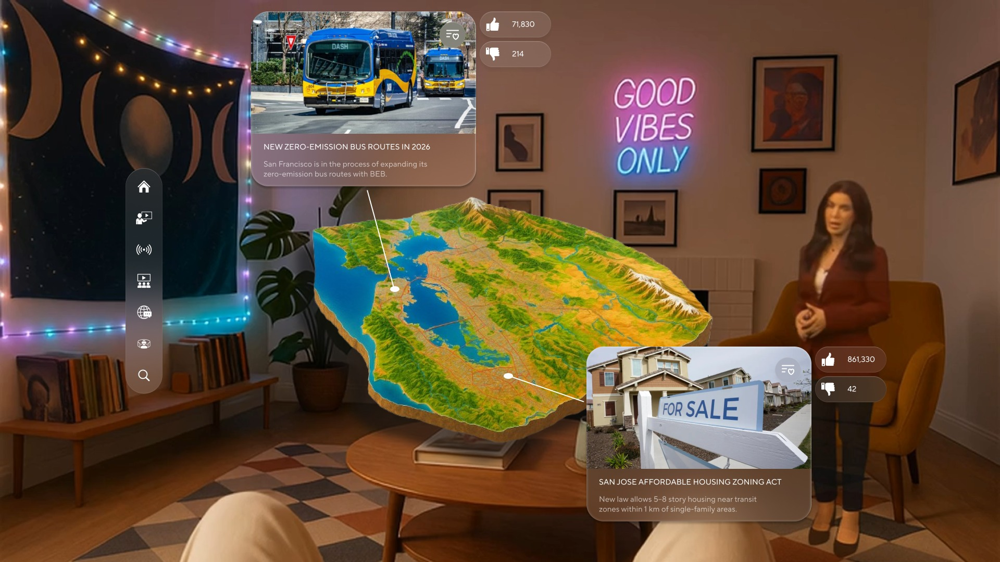
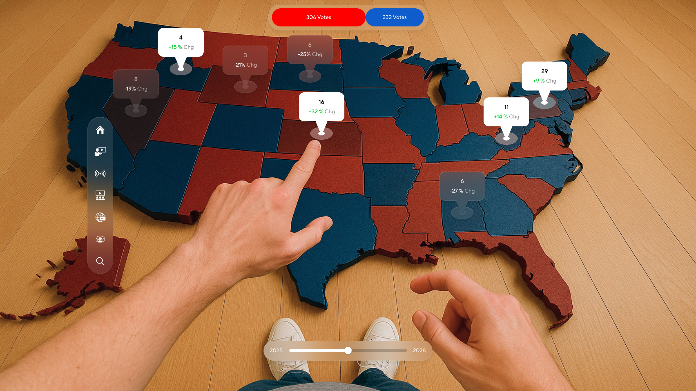
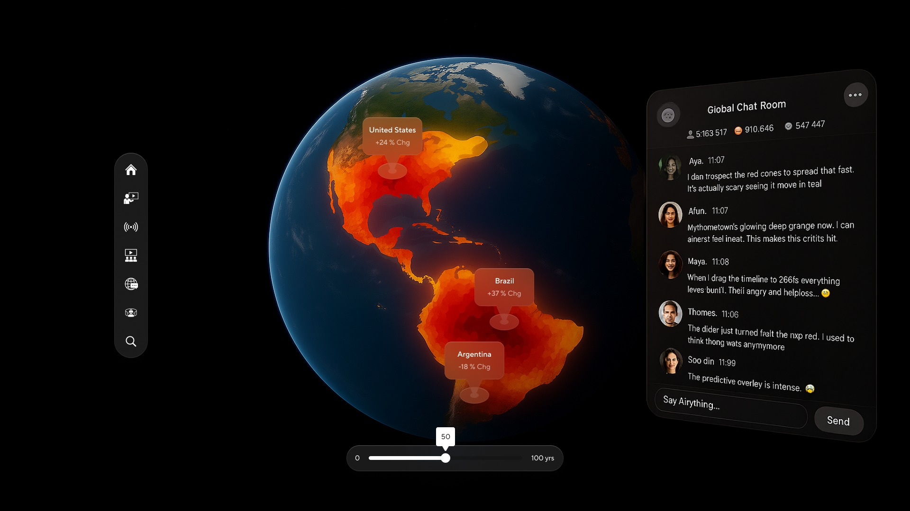
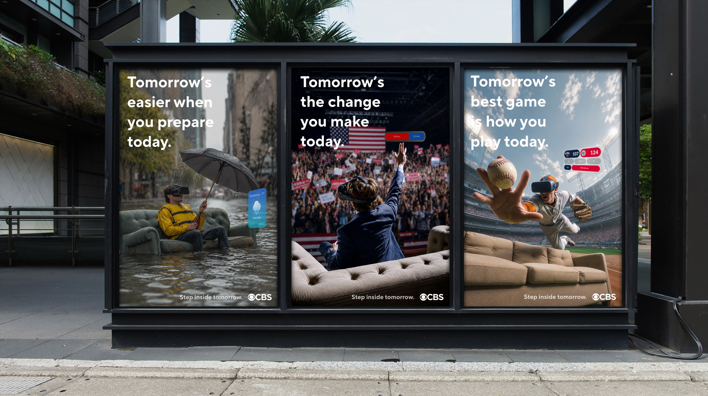
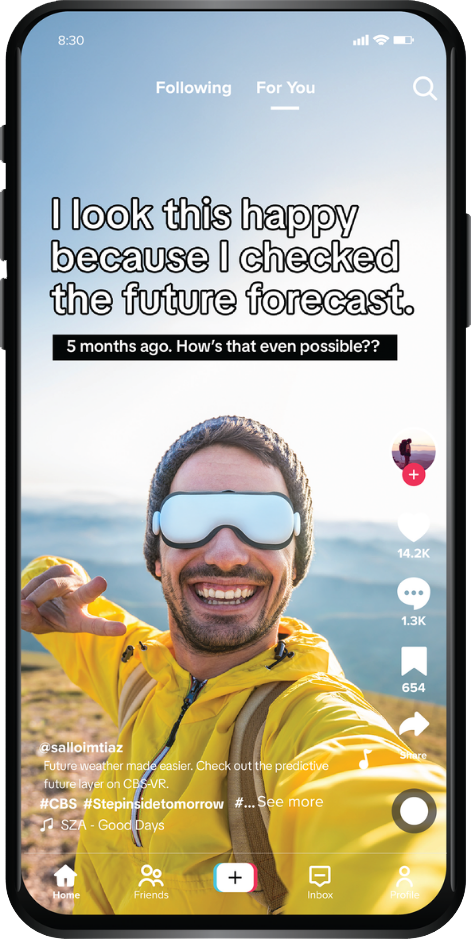
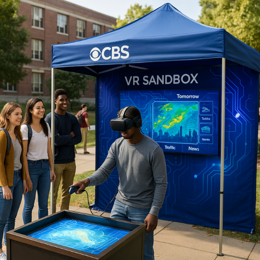
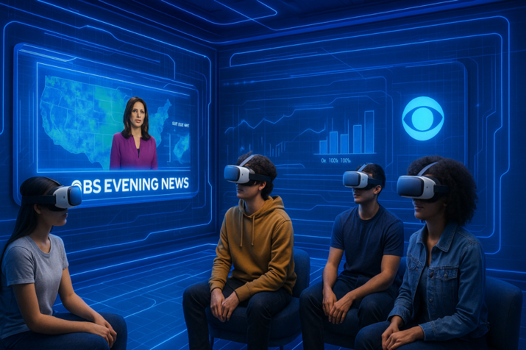

Not a story you watch. A place you can enter, question, and fast-forward.
Research
Target Audience
Gen Z · 18–26
VisualInteractiveSocialEarly adopters
63%
have used AR
75%
have tried VR
47%
find VR fun
Watching is no longer enough. What if the news became something you could experience?
Experience
01Explore
Don’t just watch. Take part.



02Understand
Don’t just hear the story. Ask your AI avatar.
03Predict
Don’t just follow the story. See what could happen next.
Campaign
01Out of Home

02Social


03Pop-up

